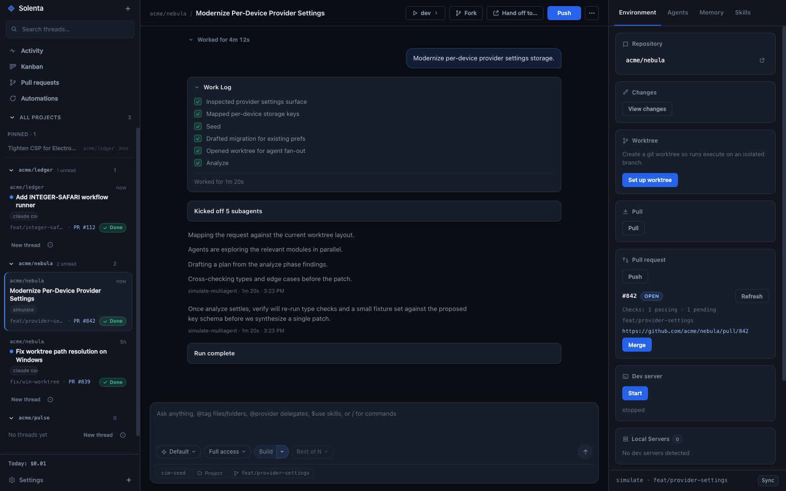
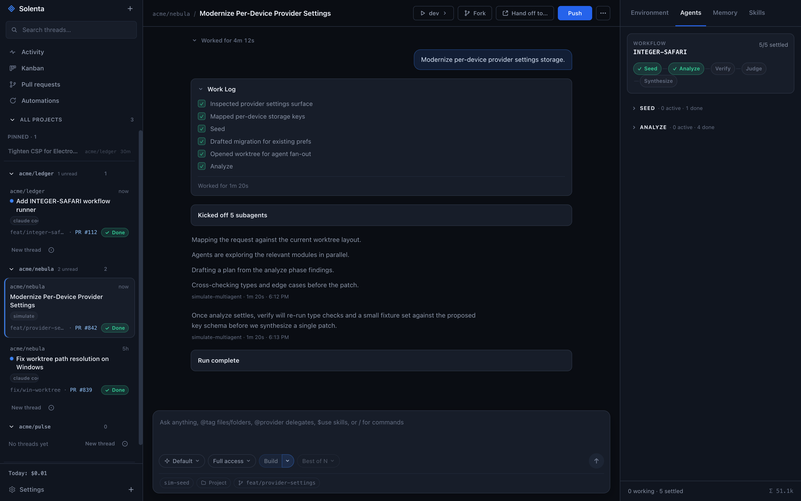
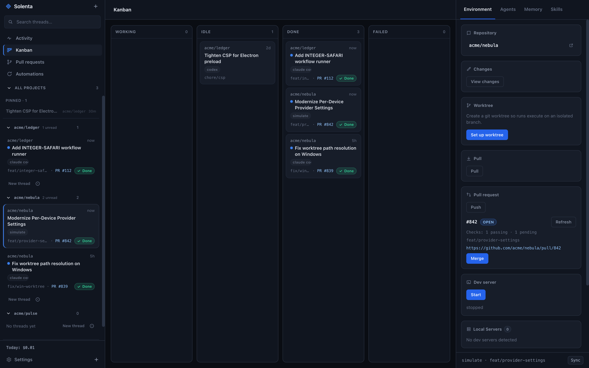

Every coding agent.
One window.
Solenta runs Claude Code, Codex, Kimi, Grok and OpenCode side by side, each thread in its own git worktree. Free and open source.

Solenta runs Claude Code, Codex, Kimi, Grok and OpenCode side by side, each thread in its own git worktree. Free and open source.

Everything stays on your machine. Solenta drives the CLIs you already have installed.
Seed, analyze, verify, judge, synthesize. Fan out agents per phase, give each phase its own provider, and watch every phase settle live.

A local memory server is injected into every session. What one thread learns, the next one knows.
Claude Code, Codex, Kimi, Grok and OpenCode with sticky permission modes, model overrides and session resume.
Set a daily budget. A run that would cross it never starts. Token burn is visible per thread.
--serve-web puts the UI in a browser behind a token. Register projects on remote hosts and agents run there over SSH.
Working, idle, done, failed. Every thread at a glance.

Recurring prompts against any project: hourly, daily, weekly, with the provider and model you pick.

Every thread carries tools to drive the other threads. You describe the fan-out in plain language; the agent spawns, supervises and reports back.
Grab an archive from the latest release, then install whichever agent CLIs you want to drive. Solenta finds them on your PATH.
Apple Silicon
Solenta-0.1.0-macos-arm64.zip unzip, move to /Applications first launch: right-click > Open
x64
Solenta-0.1.0-win32-x64.zip unzip anywhere run solenta.exe (SmartScreen asks once)
x64
Solenta-0.1.0-linux-x64.tar.gz tar xzf Solenta-*.tar.gz ./solenta/solenta